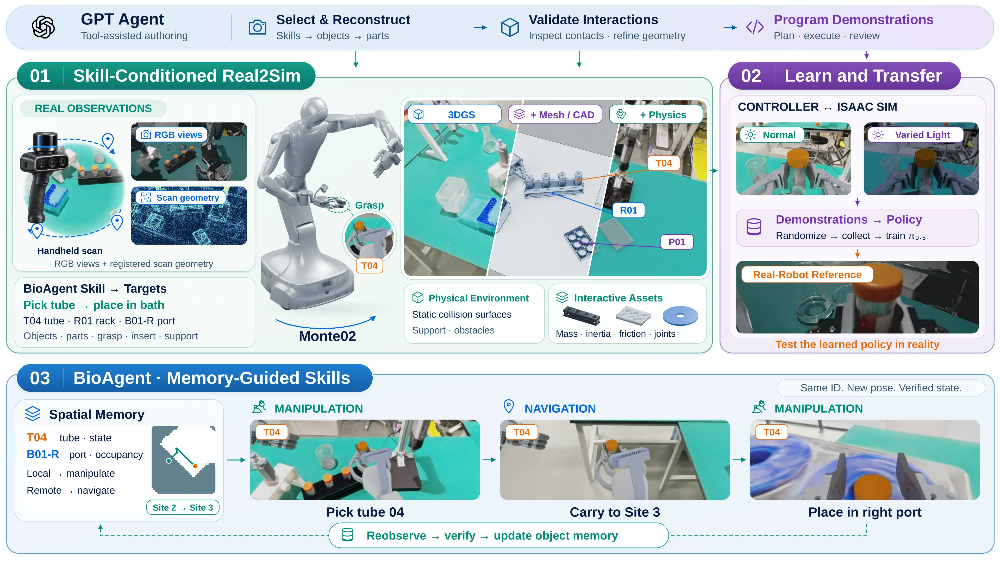
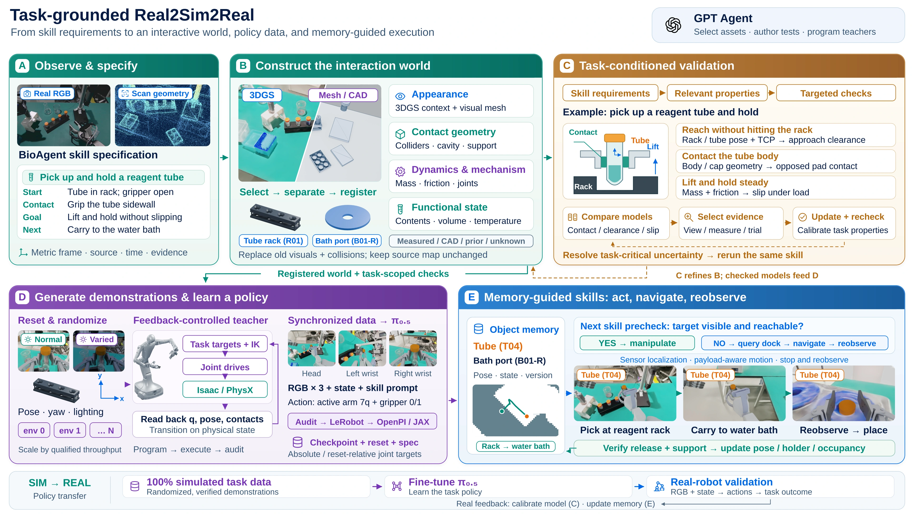
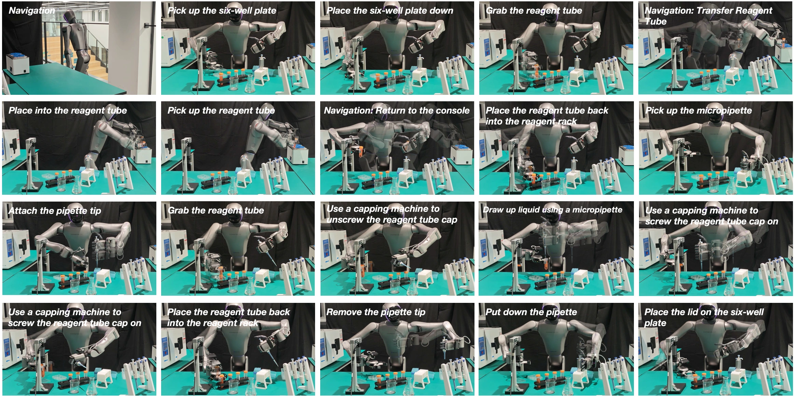

SIMULATION02:04 · 720p
An interactive laboratory in simulation
The full water-bath workflow in the digital twin, with English task annotations. It shows simulated navigation and a sequence of laboratory interactions.
Download full simulation video ↓Interactive Digital Twins
for Scalable Robot Skill Learning
Validate interactions in simulation. Learn transferable skills. Use real-world feedback to refine the digital twin.
Build. Learn. Transfer. Refine.
A visually convincing reconstruction can still have the wrong contact geometry, a blocked rack slot, or an inconsistent device state. BioAgent-World constructs interactive digital twins whose geometry, mechanisms, and functional states are checked against the requirements of robot skills.
Validated scenes support state-consistent demonstration generation and policy learning. Real-robot execution then tests transfer; discrepancies guide targeted observations, local scene correction, and renewed validation. Persistent object and state memory connects manipulation and navigation across workstations.

Watch the complete simulation workflow and the real-robot recording. Together, they illustrate the two sides of our sim-to-real research loop.
The full water-bath workflow in the digital twin, with English task annotations. It shows simulated navigation and a sequence of laboratory interactions.
Download full simulation video ↓The complete task recording on physical hardware. Real execution provides the evidence needed to assess transfer and identify discrepancies for further simulation refinement.
Download full real-robot video ↓Execution evidence → targeted observation → local correction → revalidation in simulation
Skill requirements guide reconstruction. Validation constrains data generation. Real-world evidence closes the loop.
Trace skill conditions to scene geometry, contact surfaces, mechanisms, and functional states. Use observations, measurements, and interaction tests to establish the supported scope.
Real observations → interactive twinThe Skill Agent checks preconditions and postconditions, preserves state across successive skills, and generates demonstrations under constrained randomization for policy learning.
Validated twin → demonstrations → policyEvaluate learned skills on the physical robot. Persistent memory connects actions across workstations, while real discrepancies guide additional evidence and local world refinement.
Real execution → evidence → refined twinThe next skill starts from the state the previous skill actually left behind.
STATE-CONSISTENT LEARNING
Multiple scene hypotheses can agree with the same images yet disagree on whether a tube fits, a grasp is stable, or the next action remains possible. The framework compares these task outcomes under a fixed diagnostic controller.
Additional views, depth, dimensions, state readbacks, or interaction trials are selected by their expected reduction in skill-usability decision risk per unit cost. New evidence updates the hypotheses, followed by local correction and revalidation.
Which scene property changes the skill outcome?
Choose the observation that best resolves the uncertainty.
Update local geometry or state and rerun the relevant checks.
The manuscript compares real demonstrations and BioAgent-World demonstrations under matched policy architectures, training-data budgets, and robot task conditions.
The skill count covers BioAgent’s spatial-memory branch library, including candidate and auxiliary entries. The manuscript reports transfer evaluation on 11 laboratory skills, 3 policy backbones, and 1,320 real-world trials.
Macro-averaged skill success rate · Manuscript, Table 1
| Backbone | Real data | World data | Retention |
|---|---|---|---|
| π0.5 | 75.9% | 68.2% | 89.8% |
| Diffusion Policy | 45.0% | 38.2% | 84.8% |
| LingBot-VA | 79.1% | 74.1% | 93.7% |
Retention = World-data success rate ÷ Real-data success rate. Each skill is evaluated independently, with 20 trials per backbone–data-source condition; these are not end-to-end workflow success rates.
2,200 accepted trajectories per source · Manuscript, Table 2
| Measure | BioAgent-World | Real teleoperation |
|---|---|---|
| Total processing | 36.3 h | 36.8 h |
| Accepted / hour | 60.6 | 59.8 |
| Acceptance rate | 89.2% | 97.0% |
| Human interaction | 11debugging sessions | 2,267teleoperated attempts |
Total time includes preparation through dataset delivery. Interaction counts use different episode definitions; they are not a ratio of total human work hours.
| Laboratory skill | Real data | World data |
|---|
Remaining gaps are most visible in tube-cap manipulation and final plate-lid replacement. The reported data-source comparison evaluates the pipeline as a whole; it does not isolate the contribution of each reconstruction or refinement component.
Object identity, pose, functional state, evidence, and time persist across manipulation and navigation. The robot stops and reobserves after navigation, then checks the next skill against fresh evidence.

Interactive worlds, transferable skills, and an evidence-driven loop between simulation and the physical robot.
Watch both demonstrations↑